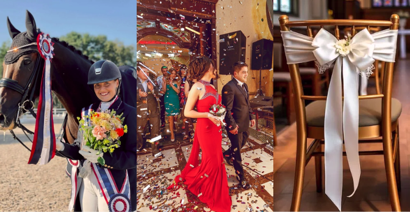

Stilfulde bånd i ECO satin og polyprotex
Ordensbånd har en fascinerende historie og stammer oprindeligt fra militære og royale ceremonier, hvor de blev brugt som symboler på ære og rang.
Dekorationer bæres af mænd i krydsbånd, og kvinder, i det danske kongehus, bærer dekorationer i et ordensbånd formet som en sløjfe.
Kilde: dr.dk
I dag bruges ordensbånd bredt og mere folkeligt – alt fra sportspræmier og prisoverrækkelser til temafesterog juleafslutninger. Uanset anledningen er ordensbånd en alsidig og smuk løsning, der gør festen elegant og chikt. Hos JM Band tilbyder vi ordensbånd i to kvalitetsmaterialer: det bæredygtige ECO Satin og det slidstærke slidstærke Polyprotex.
Anledninger til ordensbånd
1. Til Ceremonier og prisoverrækkelser
Brug ordensbånd som en elegant markør ved ceremonierne og officielle prisoverrækkelser. De kan bæres som et symbol på ære og bruges som dekoration. Forstil dig dine deltagere eller vindere iført stilfulde ordensbånd med frynser – en detalje, som kan gøre en æstetisk forskel!
2. Til temafester og julearrangementer
Planlægger du en festlig juleafslutning eller en temafest? Ordensbånd kan bruges som en sjov og dekorativ måde at fremhæve særlige deltagere, og som er synlige hele festen. Tilføj humor og personlighed med tilpassede tekster og farver.
3. Som en del af din dekoration
Ordensbånd er også perfekte som pynt. Bind dem omkring stole, gaveæsker, over dørene eller som elegante gardinbånd. Med vores holdbare materialer og flotte farver vil de helt sikkert gøre indtryk til din begivenhed.
Hvad gør JM Bands ordensbånd enestående?
Vores bio-nedbrydelige ECO satin-ordensbånd er skabt med fokus på bæredygtighed, og tager hensyn til miljøet, uden at gå på kompromis med kvaliteten. Derudover har du mulighed for at designe båndene efter dit eget ønske, og gøre båndet personligt. Vi trykker på alle farver i vores farveudvalg i fire forskellige trykfarver. Vi trykker både tekst, logoer og silhuetter.
Sidst men ikke mindst ved vi, hvor vigtigt det er at modtage båndene til tiden. Vi garanterer derfor en hurtig levering, så dit arrangement bliver en succes.
Mangler du inspiration til kåringstitler eller bare tekst man kan skrive på båndet?
Vi har gjort arbejdet for dig og samlet inspiration til din festlige anledning.
Her er de bedste kåringstitler og tekster, som alle forhåbentlig kun kan more sig over!
Med JM Bands ordensbånd tilføjer du en æstetisk fornem detalje til dit arrangement, der både kan være et sjovt indslag eller en visuel flot dekoration.
Vores team står klar til at hjælpe dig med at gøre dit event uforglemmeligt!
Bestil dine ordensbånd hos os i dag!
Sådan bestiller du dine ordensbånd
1. Vælg antal bånd med samme farve
2. Vælg farve på båndet
3. Gå videre til designeren for at tilføje tekst og logo
4. Bestil ordensbånd ordensbånd hos JM Band
Kontakt os i dag, hvis du har spørgsmål eller brug for hjælp til design.
Ofte stillede spørgsmål:
Kan jeg få ordensbånd i forskellige farver og materialer?
Ja, JM Band tilbyder ordensbånd i en række forskellige farver og materialer, herunder eco satin og polyprotex, der kan tilpasses dine behov.
Hvad kan jeg bruge ordensbånd til?
Ordensbånd bruges ofte til ceremonielle formål, såsom hæderspriser, jubilæer og officielle arrangementer, men de kan også være sjove til uformelle events som juleafslutninger og festlige nomineringer.
Er det muligt at tilføje frynser eller andre detaljer til ordensbåndene?
Ja, du kan tilkøbe frynser, som tilføjer et ekstra elegant præg til ordensbåndene og gør dem velegnede til særlige anledninger.
Har du flere spørgsmål?
Tøv ikke! Kontakt os i dag, og vi vil svare på dine spørgsmål
Læs også:
Kommentare:
Indsend en kommentar under opslaget
Relateret produkter:
Indvielsesbånd
Kransebånd
Mållinjebånd
Indsend en kommentar
*Skal udfyldes
Bemærk, kommentarer skal godkendes, før de bliver offentlig gjort